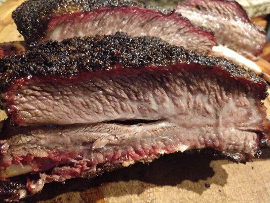

Texas BBQ Beef Ribs

Description
Beef short ribs, or dino ribs as they are called, are the new hot item in Texas and one of my favorite things to smoke right now.Beef short ribs are from the short plate before the 10th rib and have more meat than back or finger ribs. The famous Louie Mueller Barbecue in Taylor, Texas popularized beef ribs in response to Aaron Franklin's Best Brisket on the Planet designation. Each one can weigh 1 to 2 pounds. They are rich in flavor and a lot of times better than brisket.
Ingredients
- Hardwood pellets as needed
- 4 pounds of beef ribs
- ½ cup Montreal-style steak seasoning
- 2 tablespoons mild chili powder
- 1 teaspoon garlic powder
- 2 tablespoons Worcestershire sauce
- 8 fluid ounces apple juice
Steps
- Pour wood chips into the hopper of a pellet grill according to manufacturer's instructions. Set temperature to 275°F (135°C).
- Trim ribs with a sharp knife to remove as much fat and silver skin from the top of the ribs as possible. Leave the membrane on the bottom of each rack as this will help hold them together as they cook.
- Place steak seasoning in a coffee grinder or food chopper. Grind to a medium coarseness to reduce the size of the salt crystals. Transfer to a shaker bottle. Add chili powder and garlic powder and shake until evenly combined.
- Rub ½ of the Worcestershire sauce on the bottom of the ribs as a binder, then sprinkle on a medium to heavy coat of the rub mixture. Flip ribs and repeat on the meaty side. Spritz a light coat of apple juice over top to help it sweat.
- Immediately place ribs on the preheated pellet grill with the thicker side of the ribs towards the main heat source (toward the back, opposite the lid).
- Smoke ribs, spritzing them with a light coat of apple juice every 30 minutes to keep moist, until the internal meat temperature reaches 198 - 203°F (92 - 95°C), 4 - 6 hours. If it is taking longer don't be afraid to raise the heat to 325°F (165°C) but just watch the internal temperature a little closer, as the window of being done is smaller due to the higher cooking temperature. The temperature probe should slide into the meat like a brisket or like butter when they are ready.
- Remove ribs from the grill and place on a large cutting board. Slice into individual ribs to serve, or remove the meat and place on a tray to serve.